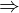

Chapter 3. Implication¶
An implication has an antecedent and a consequent. If the antecedent is true, the consequent must also be true. Prove-It has an Implies operation that may be used to represent an implication, formatted with the $\Rightarrow$ symbol. While this is a concept used in the core, Implies is actually defined outside of the core in the proveit.logic package. It is known in the core for use in the modus ponens and hypothetical reasoning derivation steps discussed below. First we will take a brief tour of the Implies class.
from proveit._common_ import A, B, C, X
from proveit.logic import Implies
%begin implication
A_impl_B = Implies(A, B)

Implies is an Operation:
A_impl_B.exprInfo()
| core type | sub-expressions | expression | |
|---|---|---|---|
| 0 | Operation | operator: 1 operands: 2 | |
| 1 | Literal |  | |
| 2 | ExprList | 3, 4 |  |
| 3 | Variable |  | |
| 4 | Variable |  |
One can access the antecedent and the consequent of the implication:
A_impl_B.antecedent
A_impl_B.consequent
Modus Ponens¶
Modus ponens is a straightforward derivation step in which you can derive $B$ assuming that $A \Rightarrow B$ and $A$ are both true statements. You can apply this derivation step explicitly by calling the deriveConsequent method of any Implies object.
B_from_A = A_impl_B.deriveConsequent(assumptions=[A, A_impl_B])
 ⊢
⊢ Recall from the previous tutorial chapter that Prove-It, in its core, is not concerned about truth-aptness. Neither $A$ nor $B$ are required to be intrinsically truth-apt. The above known truth simply means that $B$ is a true statement if we assume that $A$ and $A \Rightarrow B$ are true statements.
B_from_A.proof()
| step type | requirements | statement | |
|---|---|---|---|
| 0 | modus ponens | 1, 2 | ⊢ |
| 1 | assumption |  ⊢ ⊢ | |
| 2 | assumption |  ⊢ ⊢ |
In order for the modus ponens derivation step to succeed, the implication and the hypothesis must be proven to be true under the applicable assumptions.
from proveit import ModusPonensFailure
try:
A_impl_B.deriveConsequent(assumptions=[A])
assert False, "Expecting an ModusPonensFailure error; should not make it to this point"
except ModusPonensFailure as e:
print("EXPECTED ERROR:", e)
from proveit import ModusPonensFailure
try:
A_impl_B.deriveConsequent(assumptions=[A_impl_B])
assert False, "Expecting an ModusPonensFailure error; should not make it to this point"
except ModusPonensFailure as e:
print("EXPECTED ERROR:", e)
When a known truth wraps an implication, the assumptions of the known truth are automatically added. This is the case for any Expression method that accepts an assumptions argument and is called indirectly through a KnownTruth object that wraps the Expression object. We demonstrate this in the following two cells:
A_impl_B_truth = A_impl_B.prove([A_impl_B])
⊢ # A => B is automatically included as an assumption because it is
# an assumption of A_impl_B_truth
A_impl_B_truth.deriveConsequent(assumptions=[A])
⊢
Using an overcomplete set of assumptions¶
When taking any derivation step under a set of assumptions, any assumptions that are unnecessary will be discarded. In the example below, we include $C$ as an extra, irrelevant assumption. It is discarded as it is not needed in the proof.
A_impl_B.deriveConsequent(assumptions=[A_impl_B, A, C])
 ⊢
⊢
Hypothetical Reasoning¶
Hypothothetical reasoning is, in some sense, the reverse process of modus ponens. In modus ponens the consequent is derived from an implication (and its antecedent). In hypothetical reasoning the implication is derived from the consequent, discarding the antecedent as an assumption. A common notation to indicate a derivation rule is to display a horizontal line with a new truth below the line that can be derived from what is above the line. Using this notation, we have
Modus ponens: $\begin{array}{c} \vdash A \Rightarrow B \\ \hline \{A\} \vdash B \end{array}$
Hypothetical reasoning: $\begin{array}{c} \{A\} \vdash B \\ \hline \vdash A \Rightarrow B \end{array}$
We chose to write these in a form that exhibits the symmetry, though it does not matter whether something is an assumption or a prerequisite truth. In our modus ponens example above, we actually had
$\begin{array}{c} \hline \{A, A \Rightarrow B\} \vdash B \end{array}$
with no prerequisites, only assumptions.
If $B$ is true assuming $A$, it follows, via hypothetical reasoning, that $A \Rightarrow B$. We prove an implication by assuming the antecedent and deriving the consequent, reasoning through a hypothetical scenario. This step may be taken by calling asImplication (or asImpl as an abbreviation) on a KnownTruth object.
We will demonstrate hypothetical reasoning be proving the transitivity property of implications, $A \Rightarrow C$ given $A \Rightarrow B$ and $B \Rightarrow C$. We have already created the A_impl_B object to represent $A \Rightarrow B$ and have proven $\{A,A \Rightarrow B\} \boldsymbol{\vdash} B$. Let us now create a B_impl_C object to represent $B \Rightarrow C$:
B_impl_C = Implies(B, C)

Now we can prove $C$ given $A$, $A \Rightarrow B$, and $B \Rightarrow C$. This uses the previously derived proof of $\{A,A \Rightarrow B\} \boldsymbol{\vdash} B$ and extends it by deriving the consequent of $B \Rightarrow C$ under appropriate assumptions.
CviaTransitivity = B_impl_C.deriveConsequent([A, A_impl_B, B_impl_C])
 ⊢
⊢ 
We are now ready to apply hypothetical reasoning by calling asImplication on this `KnownTruth**:
A_impl_C = CviaTransitivity.asImplication(A)
 ⊢
⊢ 
Below is the full proof of this known truth:
A_impl_C.proof()
| step type | requirements | statement | |
|---|---|---|---|
| 0 | hypothetical reasoning | 1 | ⊢ |
| 1 | modus ponens | 2, 3 | ⊢ |
| 2 | assumption |  ⊢ ⊢ | |
| 3 | modus ponens | 4, 5 | ⊢ |
| 4 | assumption | ⊢ | |
| 5 | assumption | ⊢ |
Note that we can take any of the assumption to be the antecedent and then that assumption will be eliminated:
A_impl_B__impl__C = CviaTransitivity.asImplication(A_impl_B)
 ⊢
⊢ 
A_impl_B__impl__C.proof()
| step type | requirements | statement | |
|---|---|---|---|
| 0 | hypothetical reasoning | 1 | ⊢ |
| 1 | modus ponens | 2, 3 | ⊢ |
| 2 | assumption | ⊢ | |
| 3 | modus ponens | 4, 5 | ⊢ |
| 4 | assumption | ⊢ | |
| 5 | assumption | ⊢ |
In the previous two demonstrations, where the new antecedent was drawn from the set of assumptions, we can think of hypothetical reasoning as a procedure in which we transform an "implicit" assumption to an "explicit" antecedent. Similarly, modus ponens may be used to transform an "explicit" antecedent to an "implicit" assumption. What is the difference between these two different forms of assumption/antecedent? Why do we need both forms? The explicit form is necessary because the implicit form cannot be nested. For example, one could not precisely express $(A \Rightarrow C) \land (B \Rightarrow C) \Rightarrow [(A \lor B) \Rightarrow C]$ with assumptions alone. The implicit form is also very important. The implicit form (with assumptions) is extremely convenient, and necessary in the Prove-It framework, for accessing the consequent part of an implication directly and applying logical deduction that arise from that consequent (e.g., consider the role of $B$ as a consequent of $A \Rightarrow B$ in the above examples).
The new antecedent does not need to be one of the pre-existing assumptions, however. After all, a KnownTruth is just as valid when extra assumptions are added (the requirements are simply over-complete). For example,
X_impl_C = CviaTransitivity.asImplication(X)
⊢ 
X_impl_C.proof()
| step type | requirements | statement | |
|---|---|---|---|
| 0 | hypothetical reasoning | 1 | ⊢ |
| 1 | modus ponens | 2, 3 | ⊢ |
| 2 | assumption | ⊢ | |
| 3 | modus ponens | 4, 5 | ⊢ |
| 4 | assumption | ⊢ | |
| 5 | assumption | ⊢ |
Automation regarding Implies objects¶
We will talk more generally about automation in the automation chapter, but in this section we will get a preview of that as we look at automation specific to implications.
It is not always necessary to call the deriveConsequent method directly. In fact, the deriveConsequent method is called automatically as a "side-effect" whenever a known truth for an Implies expression is created. In the example below, a known truth for $P \Rightarrow Q$ is created via proof-by-assumption which then triggers $Q$ to be derived as a consequent, adding the extra assumption for the antecedent $P$. Then, a proof for $Q$, under the assumptions of $P \Rightarrow Q$ and $P$, is automatically generated and available upon request:
from proveit._common_ import P, Q, R, S
Q.prove([P, Implies(P, Q)])
 ⊢
⊢ 
This can be particularly useful when the request is made via some other automation (rather than the manual prove request that was demonstrated in the cell above). This automation is enabled via a sideEffects method in the Implies class which yields deriveConsequent as a method that should be called when an Implies object is created.
help(Implies.sideEffects)
Note that there are several things that may be attempted as automation here, not just deriveConsequent. In general, the sideEffects method of an Expression is called, if it exists, whenever a KnownTruth for that Expression is created. The KnownTruth object is passed to this method and the method should yield methods that should be called for deriving desired side-effects. This enables automation for a variety of Expression types, not just Implies objects. Another way that automation may be performed is by implementing a conclude method which may attempt to automatically prove a particular type of expression under a given set of assumptions:
help(Implies.conclude)
The following example of automation relies on the sideEffects method to populate a dictionary of KnownTruth implications and also on conclude to perform a search over these implications to find a path to a conclusion from a hypothesis using intermediate implications via transitivity relations (from $A \Rightarrow B$ and $B \Rightarrow C$, we can obtain $A \Rightarrow C$, as we proved in the previous section).
P_impl_S = Implies(P, S).prove([Implies(P, Q), Implies(Q, R), Implies(R, S)])
 ⊢
⊢ 
We will display the proof for the above known truth that was proven via automation, but it relies upon invoking a theorem and applying specialization which will be discussed in detail in later tutorial chapters. Consider this to be a sneak peak.
P_impl_S.proof()
| step type | requirements | statement | ||
|---|---|---|---|---|
| 0 | specialization | 3, 1, 2 | ⊢ | |
:  , : , :  , : , :  | ||||
| 1 | specialization | 3, 4, 5 |  ⊢ ⊢  | |
| : , : , : | ||||
| 2 | assumption |  ⊢ ⊢  | ||
| 3 | theorem | ⊢  | ||
| proveit.logic.boolean.implication.implicationTransitivity | ||||
| 4 | assumption |  ⊢ ⊢  | ||
| 5 | assumption |  ⊢ ⊢  | ||
We can disable this particular proof and obtain an alternate proof via automation as well.
P_impl_S.proof().disable()
Note, below, that we do not need to supply the assumptions because P_impl_S is a KnownTruth object that automatically includes its own assumptions.
P_impl_S.prove().proof()
| step type | requirements | statement | |
|---|---|---|---|
| 0 | hypothetical reasoning | 1 | ⊢ |
| 1 | modus ponens | 2, 3 |  ⊢ ⊢ |
| 2 | assumption | ⊢ | |
| 3 | modus ponens | 4, 5 |  ⊢ ⊢ |
| 4 | assumption | ⊢ | |
| 5 | modus ponens | 6, 7 |  ⊢ ⊢ |
| 6 | assumption | ⊢ | |
| 7 | assumption |  ⊢ ⊢ |
This is a slightly longer proof but it demonstrates that hypothothetical reasoning can also be automated. That is, the Implies.conclude method will attempt to apply asImplication automatically if other strategies fail (like the previous transitivity approach which fails because that proof was disabled).
Disabling/Enabling Automation¶
If desired, for whatever reason, automation (via sideEffects and conclude) may be disabled by setting the automation flag of the defaults object to False:
from proveit import defaults
defaults.automation = False
We now attempt the automated proof through transitivity relations that we performed before (but simply in the reverse direction to make it different, otherwise it would remember the solution from before). It will fail because automation is disabled.
from proveit import ProofFailure
try:
Implies(S, P).prove([Implies(S, R), Implies(R, Q), Implies(Q, P)])
assert False, "Expecting an ProofFailure error; should not make it to this point"
except ProofFailure as e:
print("Expected error:", e)
It may be re-enabled by setting this flag back to True:
defaults.automation = True
Now the proof will go through via automation:
Implies(S, P).prove([Implies(S, R), Implies(R, Q), Implies(Q, P)])
 ⊢
⊢ 
In addition to changing defaults.automation, it is also possible to disable automation for a particular instance when calling prove. Basically, this just checks if something has been proven already (or is proven by the assumptions or their automatic side-effects) and raises a ProofFailure otherwise. This can be useful in other automation to quickly check a possible proof pathway without potentially wasting the effort to commit to that pathway.
For example:
from proveit._common_ import X, Y, Z
try:
Implies(X, Z).prove([Implies(X, Y), Implies(Y, Z)], automation=False)
assert False, "Expecting an ProofFailure error; should not make it to this point"
except ProofFailure as e:
print("Expected error:", e)
But using the default automation=True, we can automatically prove this implication via transitivity (just as we saw above using different labels).
X_impl_Z = Implies(X, Z).prove([Implies(X, Y), Implies(Y, Z)])
 ⊢
⊢ 
X_impl_Z.proof()
| step type | requirements | statement | ||
|---|---|---|---|---|
| 0 | specialization | 1, 2, 3 | ⊢ | |
| : , : , : | ||||
| 1 | theorem | ⊢ | ||
| proveit.logic.boolean.implication.implicationTransitivity | ||||
| 2 | assumption |  ⊢ ⊢  | ||
| 3 | assumption |  ⊢ ⊢  | ||
%end implication